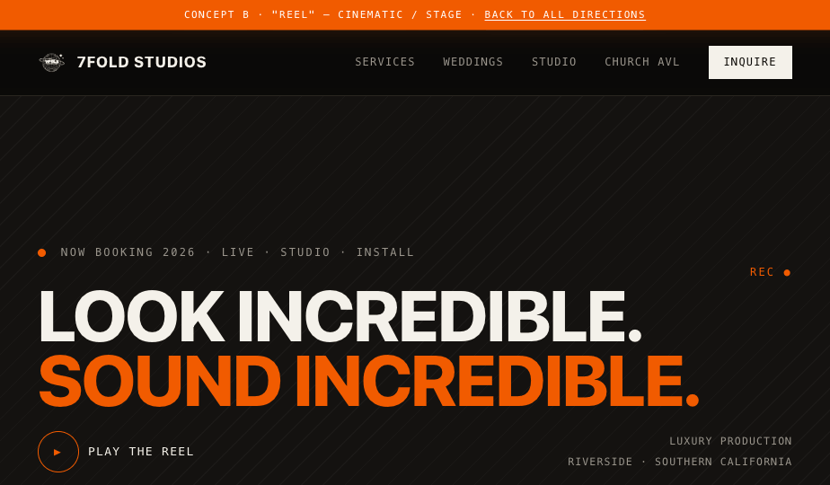

Direction A
Cinematic & dark. Content emerges from black like a film reel — heavy grotesque type, full-bleed footage and timecode meta. Premium, confident, motion-first.
- Archivo heavy
- Near-black stage
- Full-bleed video
Heavy grotesque · mono meta